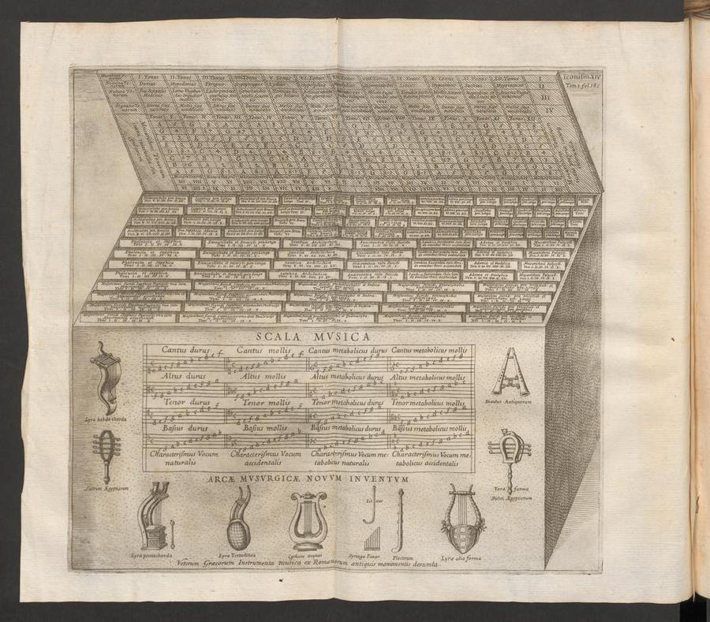

I’m interested in what happens when I give some of the decisions in making a work to a process. I can choose the material, build the connections and set something in motion, but what happens between those things can take me somewhere I hadn’t imagined. A sound or a gesture emerges, and I want to follow it. What else can it do? How far can I stretch it? What happens when I connect it to something else?
That curiosity is part of why I’m making Listening Garden. I want to work with systems that can act, make changes and give me something to respond to. Listening becomes part of composing: what I hear changes what I want to try next.
Looking back through algorithmic and aleatoric composition history, I find different ways of opening those possibilities. A rule can determine a sequence. A throw of dice can choose a passage. A performer can interpret an instruction, or signals can act on one another through feedback. I’m interested in where the composer places those decisions, and what becomes possible when some of them move beyond choosing each note.
A score can open a choice
In the early eleventh-century Micrologus, Guido of Arezzo described a way to connect the vowels of a text with pitches. It offers a precise early case of a person preparing an input and a procedure helping determine the notes. [1]
Athanasius Kircher’s Arca musarithmica, described in 1650, used stored musical patterns and tables to set words for voices. A person operated it and still had choices to make. Later, Johann Philipp Kirnberger’s 1757 printed musical dice game let a throw select among prepared passages. The possible music was shaped before chance entered. The prepared material gives the system its possibilities; operating it or throwing the dice determines which of those possibilities becomes music. [2] [3]

What gets fixed, what gets released?
John Cage used I Ching chance operations while composing Music of Changes in 1951. The resulting piano score specifies the performance in detail: chance made decisions during composition, not afresh each time a pianist plays. [4]
Lejaren Hiller and Leonard Isaacson described a different arrangement in their 1958 paper on the Illiac Suite: a computer generated notes that were screened by programmed compositional rules, producing material for a string quartet. Human choices remained in defining those rules and realizing the result. [5]
These examples move decisions to different places: text, table, chance operation and program. Other works leave room for a system to unfold, or for people to decide while making and hearing it.
A system has more than one kind of opening
Iannis Xenakis used probability to organize whole populations of sounds: a composer could shape their density and distribution without specifying every relationship as a note-by-note line. His stochastic thinking began before his computer works. In Roland Kayn’s cybernetic music, interconnected electronic signals and feedback loops let a process unfold within a designed network. One case arranges probabilities; the other lets signals act on one another. [6] [7]
Other scores make room for people. Anthony Braxton’s 1988 account of his music system allows instrumental parts to move among works and lets performers negotiate tempo and dynamics. Pauline Oliveros’s Sonic Meditations turns instructions toward listening and sound-making together. Her work makes me consider how listening itself can shape a piece, as each person hears and responds to what the others are doing. [8] [9]
Sol LeWitt’s wall drawings bring this question into visual art. A written plan passes into someone else’s hands, where it becomes marks on a particular wall. I’m interested in that passage from instruction to realization: what has been decided, and what becomes possible through carrying it out? [10]
Listening can change the next rule
In the Garden, I work with rules, materials and listening as parts of the same process. Artificial Intelligence adds another participant to my own process: it can help propose and revise rules.
In Wild Grafting, sounds from the Garden take on different roles within generative arrangements: holding a line, setting a pulse, answering a gesture or gathering into texture. Timing and movement through the spatial field give them places to meet, separate and return. I’m interested in how a sound changes the character of a phrase, and how listening to that encounter opens another possibility.
Casting means choosing which sounds inhabit the parts of an arrangement. Changing the pool of available sounds lets me hear those relationships take on another character. I think of generative arrangement as a form of signal processing: timing, repetition, layering and spatial movement transform how the material is heard.
Follow a sound through the field
In this 16-second passage from Stutter Botany, five voices share a sphere. Follow their paths as they meet, separate and return.
1:07.7–1:23.7 · headphones welcome · Open the excerpt
The sphere maps five voices’ written directions. Filled dots mark notes; open dots mark rests. Turning the view changes the drawing; the audio mix stays the same.
Switch this off to hold the drawing while you listen.
These histories make me curious about where I place decisions in the Garden. What do I want to determine, and what do I want to leave open? When something happens that I hadn’t anticipated, I listen for what else it might become. What I hear changes the next rule, the next connection, the next thing I try.
Hear some different openings
These recordings offer another way into the questions above. Follow the links to listen on the labels’ pages.
- Cage, Atlas Eclipticalis with Winter Music — chance and performer choices in a different work from Music of Changes.
- Xenakis, Gendy 3 — stochastic processes applied to digital sound itself.
- Kayn, Simultan — a recorded realization of his cybernetic music.
- Braxton, Composition No. 187 — an ensemble recording from the 1995 New York album.
- Oliveros and Klucevsek, The Tuning Meditation — their two-accordion recording, distinct from the Sonic Meditations collection.
Follow the sources
- Guido of Arezzo, Micrologus, chapter XVII (early eleventh century); Lucy Green, “What is Chapter 17 of Guido’s Micrologus about?” (2007), on competing readings of the passage.
- Athanasius Kircher, Musurgia universalis, vol. 2, book VIII (1650), ETH-Bibliothek Zürich, Rar 610; interpreted here through Andrew A. Cashner, “Athanasius Kircher’s Arca musarithmica (1650) as a Computational System” (2024). Cashner distinguishes the human-operated historical apparatus from his software reconstruction.
- Johann Philipp Kirnberger, Der allezeit fertige Polonoisen- und Menuettencomponist (Berlin, 1757), digitized original, Library of Congress; Stefan Jena’s “Würfelmusik” explains the selection method.
- John Cage Trust, Music of Changes work record, including its composition date and the distinction between chance in composition and a fixed performance score.
- Lejaren A. Hiller Jr. and Leonard M. Isaacson, “Musical Composition with a High-Speed Digital Computer”, Journal of the Audio Engineering Society 6, no. 3 (1958): 154–160.
- Iannis Xenakis, Formalized Music, expanded edition (1992), chapters I and V; Benoît Gibson’s essay on stochastic music for the Xenakis Association distinguishes the early works and their distributions.
- Roland Kayn, “Cybernetic Music” and other artist writings, official Kayn site. His account describes control loops and feedback.
- Anthony Braxton, “Introduction to Catalog of Works” (1988), postulates and clarifications on autonomous parts, recombination, tempo and dynamics.
- Pauline Oliveros, Sonic Meditations, official publication listing; her 2012 CV identifies the scores. The complete collection has not been closely read for this short note.
- Sol LeWitt, “Doing Wall Drawings” (1971), reproduced in the Museum of Modern Art catalogue, printed p. 169. This is a visual-art comparison about written plans and human realization.